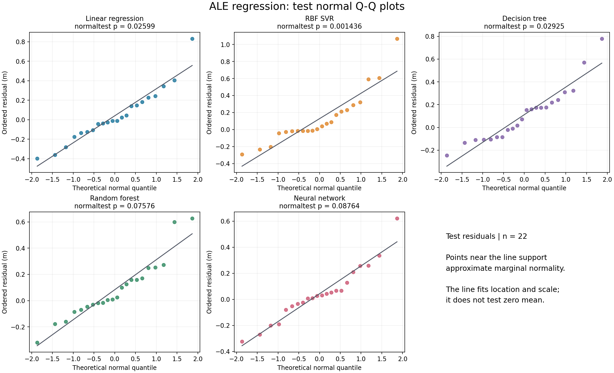
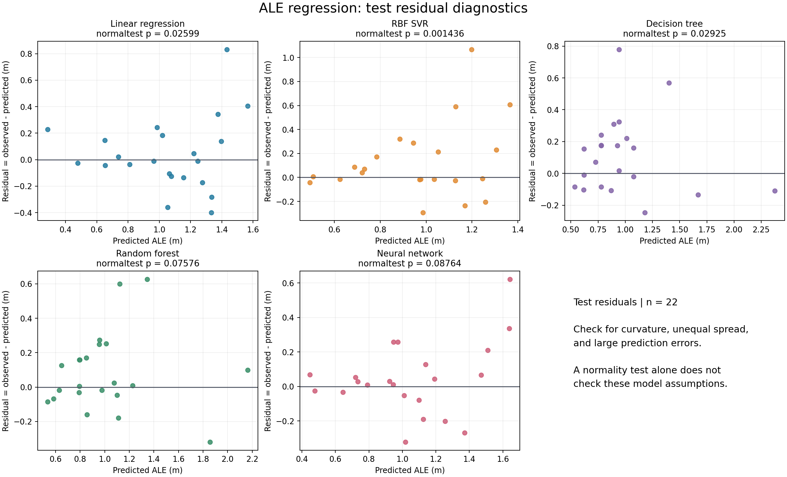
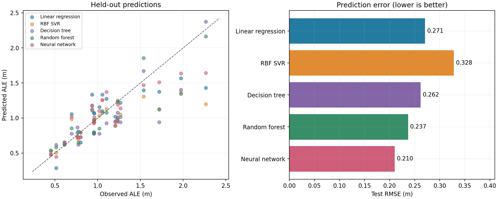
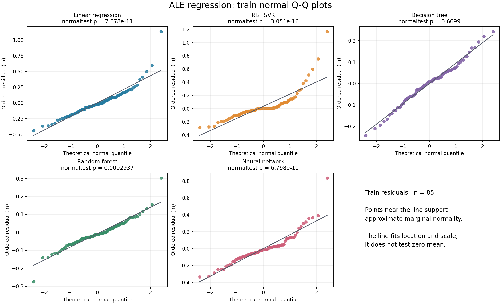

Machine Learning 1 · Homework 1 · Problem 4
在 α = 0.05 下，五个主检验做 Holm 校正后，RBF SVR拒绝残差的正态性假设。 对于Linear regression、Decision tree、Random forest、Neural network，证据不足以拒绝正态性；这不能证明残差服从正态分布。
本次留出集上 RMSE 最小的是 Neural network（RMSE = 0.2102 m，MAE = 0.1495 m，R² = 0.7761）。这是本次比较的描述结果，并非独立确认的模型选择结论。
按 main.pdf 第 4 题，用前四个变量 anchor_ratio, trans_range, node_density, iterations 预测 ale，忽略 sd_ale。来自 UCI ALE 数据集的原始 CSV 有 107 行、6 列，无缺失值，ALE 单位为米；数据来自传感器定位的模拟实验。四个特征组合均唯一。
random_state=42，随机 80/20 划分：训练集 85 行，测试集 22 行。各模型共享同一划分，行号保存在 results/split.csv。r = y - ŷ。以测试残差的 D'Agostino-Pearson normaltest 为主检验，H₀ 为残差样本来自某一正态分布，H₁ 为偏离正态；α = 0.05。该检验合并偏度和峰度，并不检验均值是否为零。预处理遵循 scikit-learn 关于训练/测试隔离的建议。本次拟合和调参没有产生警告。
| 模型 | n | MAE | RMSE | R² | K² | p (原始) | p (Holm) | Shapiro p | 结论 (Holm) |
|---|---|---|---|---|---|---|---|---|---|
| Linear regression | 22 | 0.1954 | 0.2705 | 0.6292 | 7.2997 | 0.0260 | 0.1040 | 0.2043 | 未拒绝正态性 |
| RBF SVR | 22 | 0.2074 | 0.3281 | 0.4547 | 13.0913 | 0.0014 | 0.0072 | 0.0054 | 拒绝正态性 |
| Decision tree | 22 | 0.1940 | 0.2621 | 0.6520 | 7.0637 | 0.0293 | 0.1040 | 0.0580 | 未拒绝正态性 |
| Random forest | 22 | 0.1672 | 0.2369 | 0.7158 | 5.1604 | 0.0758 | 0.1515 | 0.1028 | 未拒绝正态性 |
| Neural network | 22 | 0.1495 | 0.2102 | 0.7761 | 4.8691 | 0.0876 | 0.1515 | 0.2627 | 未拒绝正态性 |
MAE、RMSE 单位均为米，K² 是 normaltest 的统计量。原始 p < 0.05 的个别判断不一定能在五模型的多重比较校正后保留。
如果按题目的单模型检验直接比较原始 p 与 0.05，本次拒绝正态性的模型是：Linear regression、RBF SVR、Decision tree。本报告另给出 Holm 校正，以区分单模型判断与同时比较五个模型的判断。

QQ 图比较残差分位数与标准正态理论分位数，灰线拟合位置和尺度。点接近直线支持近似正态，明显尾部偏离或弯曲提示非正态；应结合检验结果而非仅凭 p 值判断。


| 模型 | n | MAE | RMSE | R² | K² | p (原始) | Shapiro p |
|---|---|---|---|---|---|---|---|
| Linear regression | 85 | 0.1563 | 0.2249 | 0.6695 | 46.5802 | 7.678e-11 | 3.227e-06 |
| RBF SVR | 85 | 0.1158 | 0.2122 | 0.7058 | 71.4519 | 3.051e-16 | 9.275e-11 |
| Decision tree | 85 | 0.0716 | 0.0934 | 0.9430 | 0.8014 | 0.6699 | 0.7575 |
| Random forest | 85 | 0.0533 | 0.0747 | 0.9636 | 16.2658 | 2.937e-04 | 7.468e-04 |
| Neural network | 85 | 0.1144 | 0.1706 | 0.8098 | 42.2184 | 6.798e-10 | 2.021e-06 |
训练残差受模型拟合影响，可能被灵活模型人为压缩，因此不能替代留出集诊断。训练误差明显小于测试误差可能提示过拟合。训练集 p 值未做多重比较校正，也不是主结论的依据。

在 α = 0.05 下，五个主检验做 Holm 校正后，RBF SVR拒绝残差的正态性假设。 对于Linear regression、Decision tree、Random forest、Neural network，证据不足以拒绝正态性；这不能证明残差服从正态分布。
仅 22 个测试残差使检验的统计功效有限。所有测试观测共享同一训练模型，而训练残差还受到拟合约束；正态性检验的常规 p 值在这里应作为近似诊断。即使边际残差接近正态，也不能据此断定条件误差处处正态、同方差、独立或均值为零。
拒绝正态性只能说明“高斯误差似然”这一平方损失的解释在该模型下缺少支持，不能推出平方损失不可用。不依赖正态性，条件均值 E[Y|X] 仍然是平方损失下的最优预测（在二阶矩有限时）。模型遗漏非线性关系也可能导致非正态残差。预测误差较低与残差较正态是两个不同的评价目标。
| 模型 | 训练集 CV 选定参数 |
|---|---|
| Linear regression | {} |
| RBF SVR | {"regressor__model__C": 1.0, "regressor__model__epsilon": 0.01, "regressor__model__gamma": 0.1} |
| Decision tree | {"max_depth": null, "min_samples_leaf": 2} |
| Random forest | {"max_depth": null, "min_samples_leaf": 1} |
| Neural network | {"regressor__model__alpha": 1.0, "regressor__model__hidden_layer_sizes": [8]} |
未列出的固定参数、完整候选网格、CV 得分、版本和数据哈希保存在 results/summary.json 与 results/cv_*.csv。神经网络使用 tanh 与 L-BFGS；随机森林使用 200 棵树。
cd problem4_ale .venv/bin/python run_experiment.py
可离线重跑；脚本默认读取本地原始数据，自动覆盖由脚本生成的结果、图像及本报告。环境安装步骤见 README.md。
Singh, A., Kotiyal, V., Sharma, S., Nagar, J., & Lee, C. (2020). Average Localization Error (ALE) in sensor node localization process in WSNs. UCI Machine Learning Repository. DOI: 10.24432/C5ZP6R，CC BY 4.0。本地保存原始 CSV 和下载 ZIP，获取日期：2026-10-05。